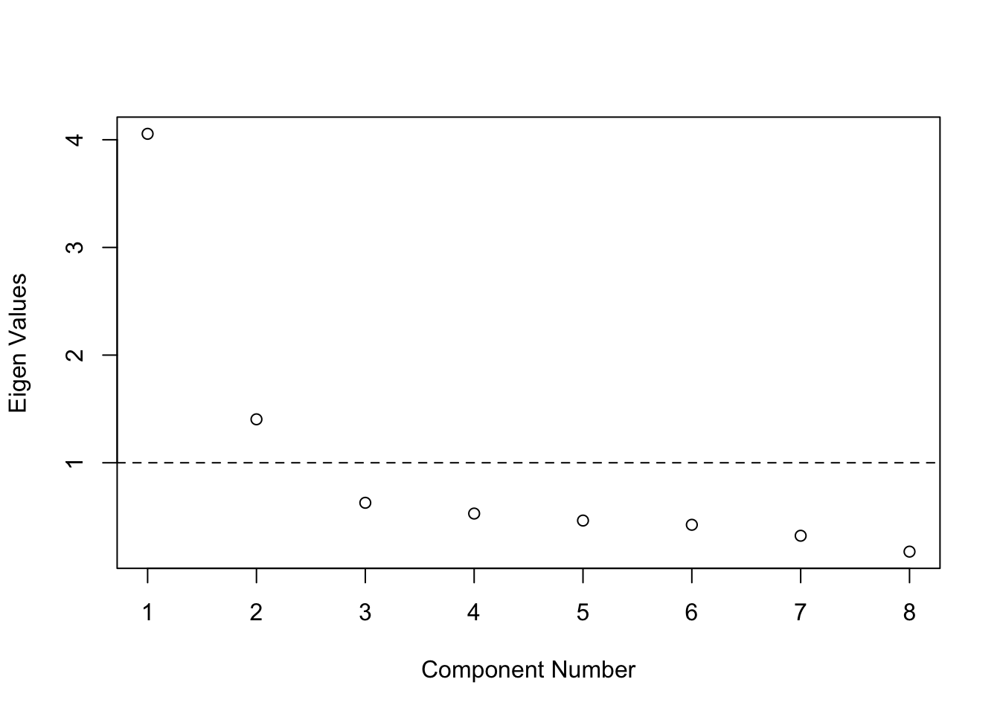
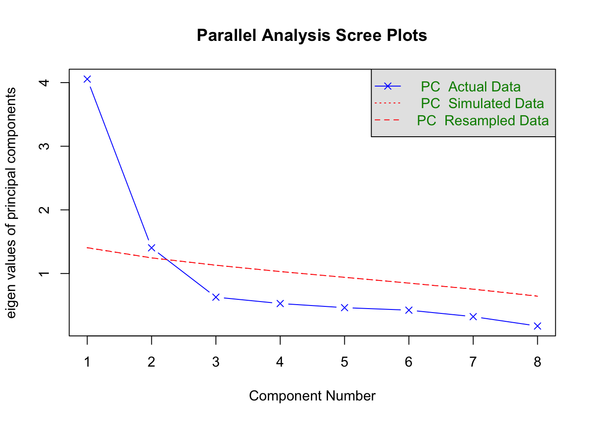
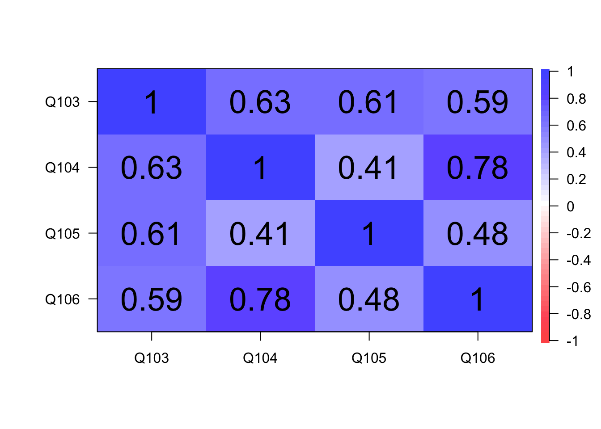

Intersectional Work Discrimination Scale Development
Published
October 20, 2021
Community Psychology is a somewhat young field of psychology, with the coining of the term in 1966 marking the beginning of the discipline (Bennett et al., 1966). Since then, community psychologists (CPs) have integrated and worked in a variety of settings including both academic/research orientated positions and more practice/applied settings. However, unlike other fields, understanding of the experiences of CPs has yet to be fully explored. Thus, a study was conducted by Shaw, Chávez, and Voight to gather information on the types of settings and experiences of community psychologist, specifically of those who are the lone CP in their work unit (see Shaw et al., 2022 for more).
Part one of the study included a survey, which needed to include a section to measure discrimination to assess this aspect of CPs experiences. However, there are few studies that look at a person’s intersectional identity as whole regarding their experiences with discrimination in the workplace (Scheim & Bauer, 2019). There are some scales that look at specific cross-section of an identity, such as Gendered Racial Microaggressions Scale for Black women and many that looks at racial discrimination (Lewis & Neville, 2015; Williams, 2016). Consequently, as Scheim & Bauer (2019) noted, it has become common to adapt racial discrimination scales to fit a more intercategorical scope, such as with this survey. Yet, by adapting these scales, and in our case also adapting them to also be specific to a work unit, it can limit their validity. Thus, by combining and adapting two scales, one that is intersectional in nature but does not focus on workplace discrimination, and a second one that is racially focused but designed to measure workplace discrimination, we hope to create a scale that captures overall discrimination experiences based on all aspects of a person’s identity in the workplace.
Methods
Sample
Participants were recruited using the SCRA listserv. To qualify for participation, survey takers were required to be 18 years or older and self-identify as a community psychologist. The survey was first sent out on June 14, 2020, on the listserv, with reminders every 2 weeks, until the survey closed on August 31, 2020. A total of 194 responses were collected for this study, but 75 responses were not used in this analysis. Specifically, 55 were taken out due not taking the survey and 20 were taken out due to incomplete surveys. The final sample consisted of 119 participants.
Measures
Intersectional discrimination index.
The Intersectional Discrimination Index, specifically the lifetime day-to-day discrimination subscale, (InDI-D; Scheim & Bauer, 2019) was used to measure overall day to day discrimination but was edited to be specific for the work unit. It consists of 9 items and uses a five-point Likert-type scale ranging from 1 (Once a week or more) to 5 (Never). Example items include, “Because of who you are, have you… Heard, saw, or read others in your work unit joking or laughing about you (or people like you),” and “…Been treated as if others in your work unit are afraid of you.”
Chronic Work Discrimination and Harassment.
A subset of The Chronic Work Discrimination and Harassment scale (Bennett, Anderson, Cooper, Hassol, & Klein, 1966; Bobo, & Suh, 2000). was used to measure discrimination with items more geared to the work environment. The total scale has 12 items, but only 8 items were used to shorten the length of the survey. Additionally, this scale was made specifically for racial discrimination and was edited to ask about overall discriminatory experience, rather than just those racially targeted. All items use a five-point Likert-type scale ranging from 1 (Once a week or more) to 5 (Never). Example items include, “Because of who you are, have you…Witnessed your supervisor or boss use bigoted slurs or jokes,” and “…Had to work twice as hard as others in your work unit.”
Demographics.
The participants were asked to identify their race and/or ethnicity based on the planned racial/ethnic categories for the 2020 U.S. Census (allowed to check more than one category), then to identify their race and/or ethnicity in a free response, what country they worked in, if they identify as LBGTQIA+, then to identify their sexual orientation in a free response, their gender identity in a free response, and finally if they have a disability or consider themselves otherly abled.
Analysis
Clean and visualize data
After loading the necessary packages and data into r, we cleaned the data by using the tiderverse package. We then visualized the data using histograms, tables, and correlation plots to see what the response distrubtion looked like for each item on both scales.
Explore Dimensionality
Then we started the test of dimensionality by conducting a Scree test that yielded three factors above the scree line (Kaiser 1960). However, a parallel analysis with 1000 iterations only found two factors passing the 95% threshold (Horn, 1973). Based on this, an exploratory factor analysis (EFA) with oblemin rotation and two factors was conducted to understand the underlying structure of the 17 items. Most items loaded onto the first factor, with items 103, 104, 105, and 106 from the Chronic Work Discrimination and Harassment scale having the highest loadings on the second factor (0.849, 0.824, 0.498, and 0.793, respectively). These four items all focused on assessing the use of bigoted slurs or jokes use by both supervisors and colleagues.
# Perform exploratory factor analysis (EFA) to identify latent factors underlying the data# Scree test: Check the eigenvalues to determine the number of factorse.values <-eigen(cor(LDF.Discrim.EFA, use="pairwise.complete.obs"))e.values$values # Display eigenvalues
plot(1:17, e.values$values, xlab="Component Number", ylab="Eigen Values") # Plot eigenvaluesabline(h=1, lty=2) # Add a horizontal line at 1 to help interpret the scree test
# Parallel analysis: Simulate random data to estimate the number of factorsParallel.Discrim <-fa.parallel(LDF.Discrim.EFA, fa="pc", n.iter =1000)
Parallel analysis suggests that the number of factors = NA and the number of components = 2
# EFA with oblimin rotation to allow for correlated factorsEFA.Discrim <-fa(LDF.Discrim.EFA, nfactors=2)# Display factor loadings for each item on the factorsEFA.Discrim$loadings
Based on this, four other exploratory analyses were then conducted that excluded differing items in an effort to identify the most logical set of dimensions. The first variation in analyses only included items from the InDI-D to see if all items loaded onto one factor. Results of the Scree test, parallel analysis, and EFA all demonstrated that this scale loaded onto one factor.
# Data with just InDI-D variables (9 items from the intersectional discrimination scale)InDI.Scale <-c("Q91","Q92","Q93","Q94","Q95","Q96","Q97","Q98","Q99")LDF.Discrim.InDI <- LDF.Discrim.clean[InDI.Scale]# Perform Scree teste.values2 <-eigen(cor(LDF.Discrim.InDI, use="pairwise.complete.obs"))plot(1:9, e.values2$values, xlab="Component Number", ylab="Eigen Values")abline(h=1, lty=2)
# Parallel analysis to determine the number of factorsParallel.Discrim.InDI <-fa.parallel(LDF.Discrim.InDI, fa="pc", n.iter =1000)
Parallel analysis suggests that the number of factors = NA and the number of components = 1
# EFA with oblimin rotation for 1 factorEFA.Discrim.InDI <-fa(LDF.Discrim.InDI, nfactors=1)# Display loadings for the factor analysisEFA.Discrim.InDI$loadings
Similarly, the second variation only included items from the Chronic Work Discrimination and Harassment scale. However, the results for this variation showed a two-factor model, with the second factor only loading with items 103, 104, 105, and 106 (see Figure 5, 6, and Table 3). Again, these four questions all focused on the use of bigoted slurs or jokes use by both supervisors and colleagues. Because of this, pairwise correlations were run, which demonstrated that the items were highly correlated with one another.
# Data with just the Chronic Work Discrimination and Harassment Scale (CWDHS variables)CWDHS.Scale <-c("Q100","Q101","Q102","Q103","Q104","Q105","Q106","Q107")LDF.Discrim.CWDHS <- LDF.Discrim.clean[CWDHS.Scale]# Perform Scree test for CWDHS scalee.values3 <-eigen(cor(LDF.Discrim.CWDHS, use="pairwise.complete.obs"))plot(1:8, e.values3$values, xlab="Component Number", ylab="Eigen Values")abline(h=1, lty=2)

# Parallel analysis for CWDHS scaleParallel.Discrim.CWDHS <-fa.parallel(LDF.Discrim.CWDHS, fa="pc", n.iter =1000)

Parallel analysis suggests that the number of factors = NA and the number of components = 2
# EFA with oblimin rotation for 2 factorsEFA.Discrim.CWDHS <-fa(LDF.Discrim.CWDHS, nfactors=2)# Display factor loadings for CWDHSEFA.Discrim.CWDHS$loadings
with(LDF.Discrim.CWDHS, table(Q103,Q106)) # boss use vs colleagues at you
Q106
Q103 2 4 5
2 1 0 0
3 0 2 4
4 0 2 5
5 0 2 102
# Pairwise correlations of 4 items related to slursslur.items <-c("Q103","Q104","Q105","Q106")LDF.Discrim.slurs <- LDF.Discrim.clean[slur.items]pCor2 <-cor(LDF.Discrim.slurs, use="pairwise.complete.obs")corPlot(pCor2)

EFA 3
Thus, items 103 (witnessing your supervisor or boss use bigoted slurs or jokes) and 106 (having your colleagues direct bigoted slurs or jokes at you) were removed. These two items were excluded as they were highly correlated with both items 104 and 105, thus not adding value and being redundant to the scale (see Figure 7 for correlations). Additionally, leaving 103 and 104 in the scale allows for one item that discusses supervisors and one that discusses colleagues, thus capturing the theory behind the original four questions.
# Data with just both scales excluding Q104 & Q105 based on low correlationsDiscrim.Scale.2<-c("Q91","Q92","Q93","Q94","Q95","Q96","Q97","Q98","Q99","Q100","Q101","Q102","Q104","Q105","Q107")LDF.Discrim.2<- LDF.Discrim.clean[Discrim.Scale.2]# Perform Scree teste.values4 <-eigen(cor(LDF.Discrim.2, use="pairwise.complete.obs"))plot(1:15, e.values4$values)abline(h=1, lty=2)
# Parallel analysis for both scalesParallel.Discrim.2<-fa.parallel(LDF.Discrim.2, fa="pc", n.iter =1000)
Parallel analysis suggests that the number of factors = NA and the number of components = 1
# EFA with oblimin rotation for 1 factorEFA.Discrim.2<-fa(LDF.Discrim.2, nfactors=1)# Display factor loadingsEFA.Discrim.2$loadings
The final variation also removed item 95 (been stared or pointed at by others in your work unit), as with both the initial full item EFA and with the InDI-D only EFA, it had a factor loading of less than 0.30. Thus, the final EFA ran with 14 items on one factor, which can be conceptualized as intersectional work discrimination, with all loadings above 0.4. This factor explained 36.1% if the total variance.
# Data with both scales excluding Q95, Q104 & Q105 based on factor analysis and redundancyDiscrim.Scale.3<-c("Q91","Q92","Q93","Q94","Q96","Q97","Q98","Q99","Q100","Q101","Q102","Q104","Q105","Q107")LDF.Discrim.3<- LDF.Discrim.clean[Discrim.Scale.3]# Perform Scree teste.values5 <-eigen(cor(LDF.Discrim.3, use="pairwise.complete.obs"))plot(1:14, e.values5$values, xlab="Component Number", ylab="Eigen Values")abline(h=1, lty=2)
# Parallel analysis for the final scaleParallel.Discrim.3<-fa.parallel(LDF.Discrim.3, fa="pc", n.iter =1000)
Parallel analysis suggests that the number of factors = NA and the number of components = 1
# EFA with oblimin rotation for 1 factorEFA.Discrim.3<-fa(LDF.Discrim.3, nfactors=1)# Display final factor loadingsEFA.Discrim.3$loadings
As the community psychology field continues to grow, and the workforce continues to diversify, understanding employees’ experiences with discrimination across intersecting identities will become increasingly important. While this scale developed used a sample of only community psychologist, they do work in a variety of settings and are often the only CP in their setting which can be further isolating, exacerbating any discriminatory experiences. By combining these two scales, we are better able to gather information on people’s experiences with discrimination based on multiple parts of individual’s identity, while also keeping it brief.
Overall, these results support the day-to-day subscale of the InDI, which had not been analyzed in this manner before. However, this also demonstrated that redundancy of some items in the Chronic Work Discrimination and Harassment scale. Specifically, the questions regarding the use of bigoted slurs and jokes in the workplace. Based on this, reducing these questions two to questions either focusing on supervisor versus colleagues, or general use versus comments directed at the individual may serve to provide more nuanced information without redundancy. Some limitations of this study are again, the sample being solely made of CPs.
To further validate this scale, another sample with individuals from various fields would showcase if these results would hold outside of community psychology. Additionally, getting a larger sample to be would allow for both a derivative and validation sample. This would allow for better assessment of the scale’s validity. Moreover, in this survey, follow-up questions were asked after each item to see what identity was being targeted by the discriminatory action. This should be further analyzed to see how if the results of scale are gathering information on an array of discriminatory experiences rather than only one (such as solely measuring discriminatory experiences based on race). This would be a good avenue for further research.
References
Bennett, C. C., Anderson, L. S., Cooper, S., Hassol, L., & Klein, D. C. (1966). Community Psychology: A Report of the Boston Conference on the Education of Psychologists for Community Mental Health. Boston: Boston Univ. 8: South Shore Mental Health Center Biglan A, Ary D. Koehn V, Levings D, Smith S, et al. 1996. Mobilizing positive reinforcement in communities to reduce youth access to tobacco. Am. J. Community Psychol, 24, 625-38.
Bobo, L. D., & Suh, S. (2000). Surveying Racial Discrimination: Analyses from a Multiethnic Labor Market. Lawrence D. Bobo, Melvin L. Oliver, James H. Johnson, Jr., and Abel Valenzuela, Jr.~ Eds, 523-560.
Horn, W. A. (1973). Minimizing average flow time with parallel machines. Operations Research, 21(3), 846-847.
Lewis, J.A., Neville, H.A., 2015. Construction and initial validation of the Gendered Racial Microaggressions Scale for Black women. J. Counsel. Psychol. 62, 289–302. https://doi.org/10.1037/cou0000062.
McNeilly, M.D., Anderson, N.B., Armstead, C.A., Clark, R., Corbett, M., Robinson, E.L., Pieper, C.F. & Lepisto, E.M. (1996). “The perceived racism scale: A multidimensional assessment of the experience of white racism among African Americans.” Ethnicity and Disease. 6, 154-166.
Scheim, A. I., & Bauer, G. R. (2019). The Intersectional Discrimination Index: Development and validation of measures of self-reported enacted and anticipated discrimination for intercategorical analysis. Social Science & Medicine, 226, 225-235.
Shaw, J., Bailey, C., Danylkiv, A., Kashyap, M., Chávez, N. R., & Voight, A. (2023). The work experiences and needs of lone community psychologists: Exploring diversity of settings and identities. Journal of Community Psychology, 51(5), 1917-1934. https://doi.org/10.1002/jcop.22979
R Core Team (2020). R: A language and environment for statistical computing. R Foundation for Statistical Computing, Vienna, Austria. URL https://www.R-project.org/.